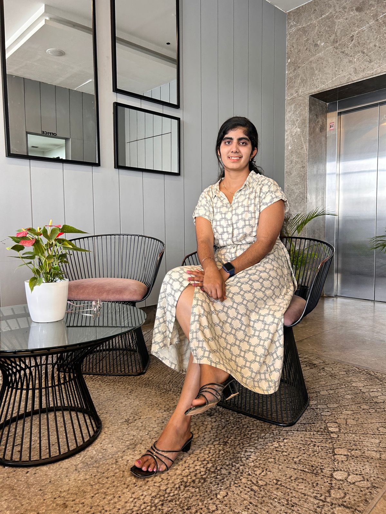
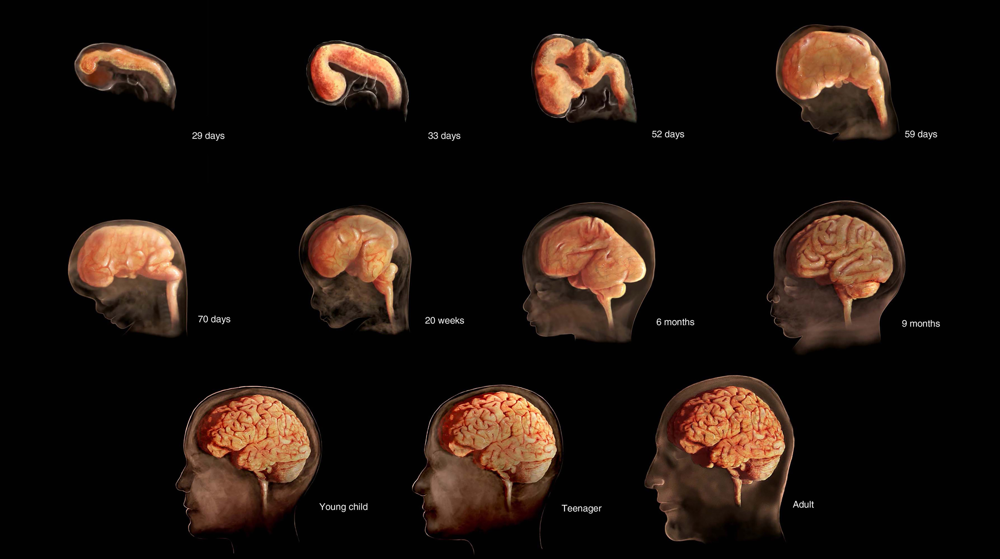
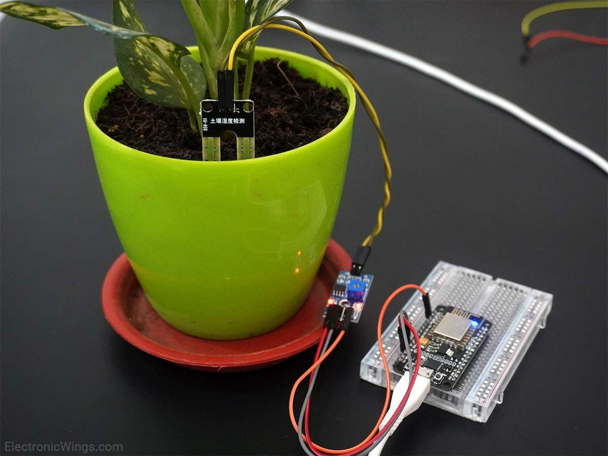
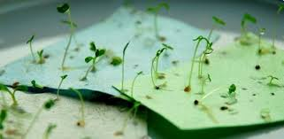

Information Science Student | Intern on Full-Stack Web Development | AI & ML Explorer | Cloud Aspirant | Cybersecurity Learner | Volunteer Educator | Passionate About Building Scalable & Impactful Tech Solutions
"I don’t write code to impress, I write it to express—the clarity of thought, the depth of purpose | While others rush the race, I build the road—each stone laid with intention, each step echoing with meaning."

I’m Meghana, a results-driven full-stack developer, AI/ML enthusiast, and cloud practitioner with a passion for turning ideas into impactful digital solutions. Whether it's building real-time apps, I thrive at the intersection of innovation and execution.
Currently a 3rd-year Information Science student, I consistently pursue technical excellence, maintaining a CGPA of 9.29.
CGPA: 9.29
Hassan, Karnataka
Software Developer

This project focuses on monitoring embryonic brain development using a web platform.
Know More
An IoT-based system to detect and respond to soil moisture levels for agriculture.
Know More
Eco-friendly paper embedded with seeds to promote sustainable and mindful growth.
Know MoreDevelop a user-friendly website or mobile app tailored specifically for students.
Insight in Sight:Designing impactful dashboard, to to enhance my understanding of dashboard design.
Maintained a strong CGPA of 9.29 throughout B.E. program with semester SGPAs ranging from 9.0 to 9.5.
NPTEL, 2024
Skilldunia, 2024
WarriorsWay, 2025
WarriorsWay, 2025
WarriorsWay, 2025
WarriorsWay, 2025
WarriorsWay, 2025
ME-RIISE Foundation, 2025
Malnad College of Engineering, Hassan
CGPA: 9.29
Pursuing a Bachelor's degree with a focus on software engineering, data structures, algorithms, and web development. Active participant in technical mentoring programs and hackathons..
Topper's PU College, Holenarasipura
Percentage: 94.23%
Swarna High School, Holenarasipura
Percentage: 93.28%
Engaged in educational support initiatives guided by ME-RIISE Foundation, helping students with basic IOT model and working.
Participated in outreach under the Unnat Bharat Abhiyan (UBA) program, providing educational support to rural students.
Engaged in educational support helping students with basic computer literacy.
Participated in 3rd internationl conference on Data Science and Information System organised by ISE in Malnad College of Engineering